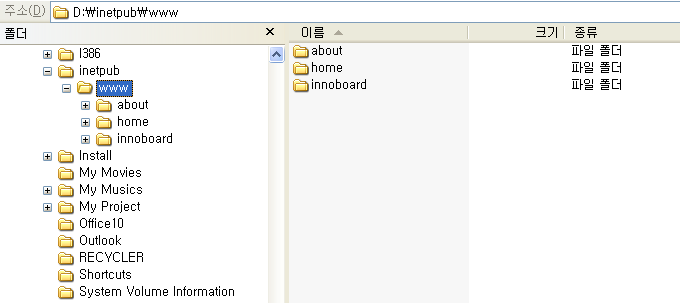
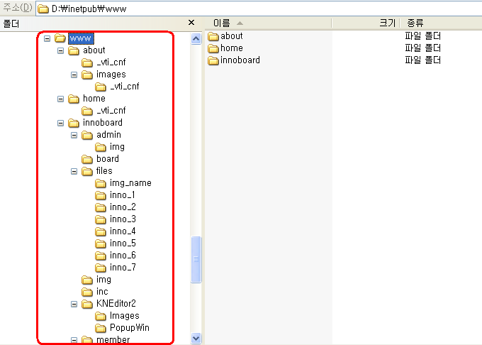

이걸 단축키라고 불러야 하는지 잘 모르겠지만.
오래전부터 알고 있던. 그러나 딱히 누군가에게도 알려준적이 없던 단축키를 하나 소개한다.
(숨기려고 했던게 아니라 별로 알려줄 꺼리가 아니었다)
바로 Asterisk (별표, *) 다.
그냥 별표(*)가 아니고 숫자키패드(키보드 우측의 숫자 키 모음)에 있는 별표(*)다.
기능 및 용도는 '하위 폴더 모두 확장' 이다.
아래와 같이 www 폴더를 선택하고 별표(*)를 누르면.

아래와 같이 확장된다.

주의해야 할 점은.
하위폴더가 너무 많을 땐 탐색기가 반쯤 죽는다는거다.
이 단축키는 탐색기의 폴더뿐 아니라 각종 Tree 컨트롤에서도 적용된다.
또다른 주의사항으로. 반대 기능을 하는 단축키는 없다는거.
주의사항 맞나?